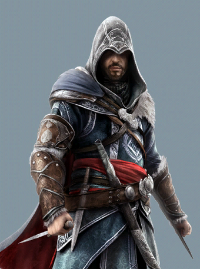

| Ezio Auditore | ||
|  | ||
| Información Biográfica | ||
| Nombre completo | Ezio Auditore da Firenze | |
| Hogar | Casa Auditore | |
| Nacimiento | 24 de Junio de 1459 Florencia Italia | |
| Fallecimiento | 30 de Noviembre de 1524 Florencia Italia | |
| Información Política | ||
| Afiliaciones |
|
|
Ezio Auditore da Firenze (República de Florencia, Italia; 24 de junio de 1459 - 30 de noviembre de 1524) fue El Profeta y el Mentor de la Orden de los Asesinos de la Italia Renacentista entre 1503 y 1513. Además, es contemporaneo de grandes figuras históricas como Nicolás Maquiavelo y Leonardo da Vinci. También es ancestro de Desmond Miles.
Nacido y criado como noble de la República de Florencia en su etapa más próspera, Ezio no llegó a saber de su herencia correspondiente a los Asesinos hasta que, con 17 años, presenció la ejecución con cargos falsos de su padre, Giovanni, y de sus hermanos Federico y Petruccio. Forzado al exilio junto a su hermana y su madre, se refugió en Villa Auditore, en el pequeño pueblo de Monteriggioni, junto a su tío Mario.
Aunque reacio a aceptar las afiliaciones secretas de su familia, Ezio comenzó un viaje para intentar vengar a su padre y sus hermanos asesinando a los culpables de sus ejecuciones, los Templarios Italianos . Esto le llevó a estar presente en grandes momentos históricos como la conspiración de los Pazzi y la Hoguera de las Vanidades.
Ezio adem&naacute;s consiguió reunir todas las páginas del Códice de Altair Ibn-La'Ahad, que llevaba dispersado más de un siglo. Ezio completó su venganza tras derrotar al Gran Maestro templario y entonces papa Rodrigo Borgia en 1499. También entro en contacto con la Isu Minerva, que le usó para transmitir un mensaje a su descendiente Desmond Miles, que estaba reviviendo las memorias de Ezio a través del Animus seis siglos después.
En 1500, tras un asedio a Monteriggioni provocado por el hijo de Rodrigo, César, que provocaría la muerte de su tío, Ezio se desplazó a Roma, donde comenzó un proceso de liberación para erradicar toda la infleuncia de la Casa de Borgia en la ciudad. Durante esta guerra, Ezio asumió el rango de Mentor de la Hermandad italiana y consiguiendo eliminar todo tipo de presencia Borgia en Italia. Ezio viajó posteriormente a Viana, donde consiguió acabar con César en 1507.
En los años siguientes, Ezio realizó un último viaje para descubrir la Biblioteca de Altair, llegando a la fortaleza de Masyaf en Siria. Con el fin de descubrir sus secretos, Ezio viajó hasta Constantinopla, controlada por el Imperio otomano, dónde se encontraban las llaves de la biblioteca. Allí, ayudó a la Hermandad otomana a luchar contra los Templarios bizantinos, los últimos restos de un imperio derrotado por los otomanos. Tras abrir la biblioteca y haber dedicado gran parte de su vida al crecimiento de la Orden, Ezio se retiró de su vida como Asesino y pasó los últimos años de su vida en su Florencia natal con su mujer, Sofía Sartor.